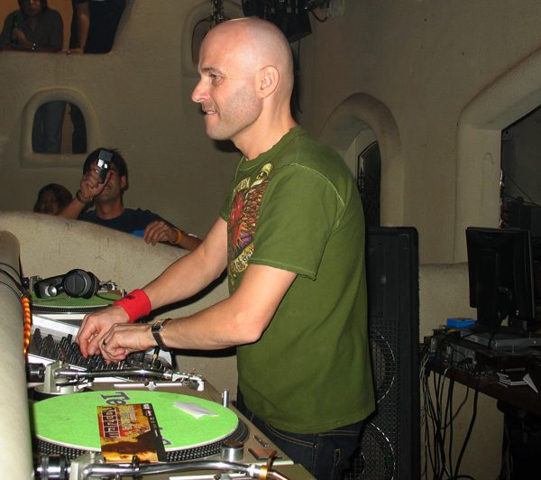

Marco V's Australian tour cancellation



If you’re a big fan of Marco V and were looking forward to one of his performances in Sydney and Melbourne in early November, prepare for some not-so-great news as it’s been revealed he’ll no longer be making it for the tour. It would have been Marco’s third visit to Australia this year, after performing at both Sensation on New Year’s Eve and the Trance Energy tour in April, but the tech trance pioneer has hinted on his Twitter account that he’s less than happy with how the cancellation went down. However, promoters Freeman International have issued a frank statement on their decision to cancel the tour.
“Due to the move from Parramatta Stadium and there not being much interest in Marco V’s tour, there was only so much cost Freedom Festival could take with Marco V. Moving from Parramatta stadium, our capacity got reduced dramatically along with 1-hour less of operating time. With a massive loss in capacity due to Parramatta stadium’s management, and the other gig in Melbourne only paying a tiny portion of what Marco’s cost, we had no alternative but to cancel,” the statement says.
“This was a very hard thing for Freeman International to do and we apologise to all who bought a ticket just to see Marco V, however we have upgraded to a better venue, included all rides in the package, added more arenas and now reduced the ticket price to $85.00. Freeman International has done numerous tours over the years and have had almost ever artist sign exclusively as their Australian tour manager. We assure you this has never happened before and will never occur again.”
Marco V was returning on the back of his Propaganda artist album earlier this year, as well as the impending release of Propaganda Part 2 which is due out shortly. He was travelling to Australia for a performance at the Freedom Festival in Sydney, which only this week announced it was shifting the party to Luna Park, and was also set to pay a visit to Melbourne to play at an event for the Darkbeat and Sunset crews.